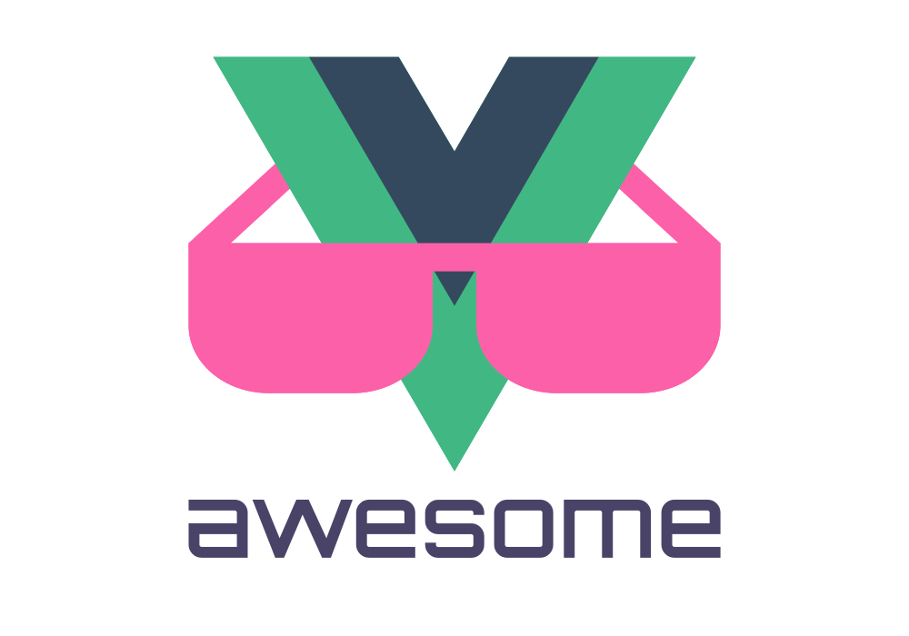

Awesome Vue 3 
A curated list of awesome things related to Vue 3
Resources
Official
- Official Documentation
- Vue Composition API
- RFCs for substantial changes / feature additions to Vue core
Related awesome lists
Articles
- Vue 3 – A roundup of infos about the new version of Vue.js
- An Overview of What's Coming in Vue 3
- Exciting new features in Vue 3
- New features in Vue 3 and how to use them
- What Noticeable Features You Should Expect in Vue v3 Release
- What New Features for Developers are Coming to Vue.js 3?
- The Vue 3 upgrade guide
- Build a movie search app using the Vue Composition API
- React Hooks vs. Vue 3 Composition API
- Composition API cheat sheet
- Building the Same Component in Vue2 vs. Vue3
- Suspense – new feature in Vue 3
- State Management with Composition API
- Portal – a new feature in Vue 3
- Faster Web Applications with Vue 3
- Why people got upset with Vue 3
- Vue 3: Data down, Events up
- Vue 3: Start Using it Today
- Reactivity: Vue 2 vs Vue 3
- Top ways to learn Vue 3
- A useModal hook and Proxies
- Vite the Fastest Development Environment Ever
- Vue 3 Async Components and Bundle Splitting
- Introducing Teleport aka Portal
- Webpack for Vue 3
- Best Practices for Testing Vue 3 Components
- Vuejs 3 and TypeScript
- Reactivity in Vue 3
- What Does Vue 3.0 Mean for Web Development?
- How to Use Vue’s watchEffect to Track Reactive Dependencies
- Vue 3's Global Mounting
- Where Did Filters Go in Vue 3?
- Go async in Vue 3 with Suspense
- Faster hot reloading for Vue development with Vite
- Create a i18n Plugin with Composition API in Vue.js 3
- Clean, Scalable Forms with Vue Composition API
- Easily switch to Composition API in Vue.js 3
- Use old instance properties in Composition API in Vue.js 3
- Access template refs in Composition API in Vue.js 3
- The process: Making Vue 3
- Context and Provider Pattern with the Vue 3 Composition API
- Understanding Reactivity in Vue 3.0
- Set up Vue 3 linting in VSCode
- Headless Testing with Vite + Vue-Test-Utils
- Use Composition API to easily handle API requests in Vue.js
- You Might Not Need Vuex with Vue 3
- Writing a vite plugin
- Be prepared to migrate your Vue app to Vue 3
- What’s New in Vue 3
- What the Heck is Vite?
- Cool Features of Vue Router 4
- Watch with @vue/reactivity
- Handling Asynchrony in Vue 3 / Composition API
- Handling Asynchrony with Vue Composition API and vue-concurrency
- Building a data layer with Vue and Composition API
- Should You Use Composition API as a Replacement for Vuex?
- Nuxt Composition API
- Creating Custom Hooks with Vue 3 & Typescript
- Deep dive into the Vue Composition API's watch() method
- Write Vue like you write React
- Announcing Vite 2.0
- Vue Composition API vs. React Hooks
- Building Vue 3 Reactivity from Scratch
- Vue with TSX - the perfect duo!?
- Pinia, an Alternative Vue.js Store
- State Management in Vue 3 Applications
- What's new in Vue 3.1?
- Template to create vue 3, vuex 4 with modules, typescript project
- Adding server side rendering to existing vue 3 projects
- Getting started with Vite and Vue 3
Packages
- vue-next - Repo for Vue 3.0
- vue-cli-plugin-vue-next - A Vue CLI plugin for trying out vue-next (experimental)
- vue-router-next - The Vue 3 official router (WIP)
- vue-test-utils-next - The next iteration of Vue Test Utils, targeting Vue 3
- composition-api - Vue2 plugin for the Composition API.
- vite - Next generation frontend tooling. It's fast.
- vitest - A blazing fast unit-test framework powered by Vite ⚡️
- vitepress - Vite & Vue powered static site generator
- vue-use-web - üï∏ Web APIs implemented as Vue.js composition functions
- vee-validate - VeeValidate (v4) Vue 3 Template driven form validation
- vuelidate-next - Vuelidate (next) - Simple, lightweight model-based validation
- vue-compose-promise - üíù Promises using vue composition API
- vue-composition-toolkit - üíö Vue3 Composition-API toolkit
- vue-composable - Vue composition-api composable components
- vueuse - üß∞ Collection of essential Vue Composition API utils works for Vue 2 and 3
- vue-use-kit - üõ†Ô∏è Useful collection of Vue composition API functions
- vue-use-utilities - üîß A collection of Vue Composition API utilities
- vue-condition-watcher - üï∂ Vue Composition API for automatic fetch data when condition has been changed
- vue-router-compositions - VueRouter Composition-API utils library
- vue-use-switch-map - üëΩ The power of the RxJS switchMap operator injected into the Vue composition world
- vue-use-infinite-scroll - ♾️ A Vue composition function that makes infinite scroll a breeze
- vue-eternal-loading - üíö Vue 3 infinity loading component for js, ts, browser, etc...
- vuehooks - üåü Collection of utility composition functions for Vue
- vue-cookie-next - üç™ A vue 3 plugin for handling browser cookies with typescript support.
- vue-quill - ‚úíÔ∏èüìù A Vue 3 rich text editor component based on Quill Editor. See a Live Demo.
- vue-draggable-next - üß± A Vue 3 drag-and-drop component based on Sortable.js.
- vue-float-menu - Customizable Floating Menu for Vue 3
- vue-toastification - üçû Light, easy, and beautiful Toasts for Vue 2 and 3.
- vue3-scroll-picker - A scroll picker component for Vue 3.
- vue-concurrency - üö¶ A library for encapsulating asynchronous operations and managing concurrency for Vue and Composition API.
- vue-inline-svg - Vue component loads an SVG source dynamically and inline
<svg>so you can manipulate the style of it with CSS or JS. Works for Vue 2 and 3. - vue-3-sanitize - HTML sanitizer for Vue.js 3 apps
- echarts-for-vue - üìäüìàECharts wrapper component for Vue 3 and 2
- headlessui-vue - A set of completely unstyled, fully accessible UI components for Vue 3, designed to integrate beautifully with Tailwind CSS.
- vue3-spring - A spring-physics based animation library, in addition to more components, to cover most of the UI related animations.
- vue3-carousel - Modern lightweight carousel component built for Vue 3.
- vue3-tabs - A swipeable tabs component for vue 3.
- vue3-dynamic-tabs - A Vue3 tabs component to easily display tabs, however and wherever you want.
- vue3-blocks-tree - A simple organization structure tree view based on Vue3.x. It supports events, slots, horizontal vision and nodes manipulation.
- particles.vue3 - A lightweight library for easily create highly customizable particles animations for websites
- vue-final-modal - A renderless, lightweight, feature-rich modal component for Vue 3.
- vueper-slides - A touch ready and responsive slideshow / carousel for Vue and Vue 3.
- splitpanes - A Vue and Vue 3 reliable, simple and touch-ready panes splitter / resizer.
- vue-cal - A Vue and Vue 3 full calendar, no dependency, no BS. ü§ò
- wave-ui - An emerging UI framework for Vue.js & Vue 3 with only the bright side. ☀️
- vant - Lightweight Mobile UI Components built on Vue 3
- vue-hooks-form - Building forms with Vue composition API
- vue-visibility - Vue plugin that hides or shows elements depending of a criteria. üëÄ
- vue-responsive-video-background-player - Play your own videos in background responsively in different resolutions.
- harlem - Simple, unopinionated, lightweight and extensible state management for Vue 3
- vue3-ui - Very clean Vue 3 components styled with love and care to integrate nicely with Bulma CSS.
- vue3-qr-reader - A Vue 3 QR reader component. Refactor vue-qrcode-reader for vue 3 compatibility.
- Equal UI - Vue 3 components library with 30+ components based on TypeScript and Equal design system.
- vue-advanced-cropper - The advanced vue cropper library that gives you opportunity to create your own croppers suited for any website design.
- vue-visual-filter - An unopinionated visual filtering component for Vue 3.
- vue-simple-acl - A simple unopinionated Vue plugin for managing user roles and permissions, access-control list (ACL) and role-based access control (RBAC).
- reforms.js - Vue 3 and Bootstrap 5 forms and cards generator.
- vue3-touch-events - Enable tap / swipe / touch / hold / mouse down / mouse up events for HTML DOM elements
- element-plus - Vue 3.0 component library with over 50 components, for developers, designers and product managers
- fast-crud - Options-oriented crud framework, developing crud as fast as lightning
- v-calendar - An elegant calendar and datepicker plugin for Vuejs
- vue-highlight - Vue 3 directive for highlight.js.
- superBVue - A Vue 3 UI Components for Web is based on boostrap 5.
- vue-color-kit -üé® A Vue 3 color picker component. lightweight, modern, and no dependence.
- vue-contentful-rich-text - ü¶â Vue 3 package for outputting a Contentful Rich Text Field
- vue3-fullscreen - A simple Vue 3 component for fullscreen.
- vue3-viewer - Image viewer component for Vue 3, supports rotation, scale, zoom and so on.
- smart-table - Simple and feature packed table components. Sorting, filtering, selection and pagination out of the box.
- @casthub/embed - iFrame Hook with cross-origin (a)synchronous IPC
- @casthub/form - Vue 3 Form Handling & Validation hook
- vue3-openlayers - vue3-openlayers is components library that brings the powerful OpenLayers API to the Vue3 reactive world. It can display maps with tiled, raster or vector layers loaded from different sources. Live Demo
- vue3-pdfmake - A PDFMake Plugin for Vue 3.x
- @vueform/multiselect - Vue 3 multiselect component with single select, multiselect and tagging options (+Tailwind support). Online Demo
- @vueform/slider - Vue 3 slider component with multihandles, tooltips merging and formatting (+Tailwind support). Online Demo
- @vueform/toggle - Vue 3 toggle component with labels, custom slots and styling options (+Tailwind support). Online Demo
- Vueform - Advanced form builder for Vue.js with multi-file upload, conditions, form steps and Tailwind support. Online Demo
- vue-timeago3 - A timeago component. Render a timestamp to a Messenger like string.
- AgnosticUI - Accessible Vue 3 Component Primitives (that also works with React, Svelte, and Angular)
- FormKit — ⚡️ Form generator, inputs, validation, internationalization (i18n) and much more.
- timer-hook - Handle timer, stopwatch, and time logic/state in your vue 3 component.
- vue3-dnd - React DnD vue3 implementation, free drag via hooks.
- vuestic-ui - Vue.js 3.0 UI Library
- vue-video-annotation - Vue3 component that allows adding annotations to videos by free drawing or adding shapes like circles, squares, and arrows.
- qalendar - A component library with an event calendar & datepicker.
- Vuedoc Markdown - Generate a Markdown Documentation for a Vue Component
- Vuedoc Parser - Generate a JSON documentation for a Vue component
- vorms - Vue Form Validate with Composition API.
- @vuepic/vue-datepicker - The most complete datepicker solution for Vue 3
- vue-tailwind-datepicker - A modern datepicker made with Tailwind for Vue 3
- Vue Icons - vue3 library with more than 50,000 SVG icons to integrate into vue projects. Online Demo
- Vue Popper - A tooltip component for vue3 using popperjs
- Vue USWDS - A Vue.js implementation of the USWDS (U.S. Web Design System)
- Vue BaseTooltip - A simple and performant tooltip plugin using Floating UI.
- Everright-filter - A query builder component for Vue3. Supports filtering of multiple data types, including string, number, dropdown, cascade, region, date, and time.
Form editor
- Everright-formEditor - A visual drag-and-drop low-code form editor. The PC depends on element-plus while the mobile depends on vant.
Examples
- vue-3-playground - Vue 3 Playground packed with all the new features
- vue3-webpack-boilerplate - Vue 3 Webpack Boilerplate (Vue 3, Vue Router 4, Vuex 4, Typescript)
- vue-ts-starter - Vue template for starter using Vue3 + TypeScript + Vite + Pinia üöÄ - Demo
- vite-tailwind-starter - Starter using Vite + Tailwind for super fast prototyping
- todomvc-vue-composition-api - TodoMVC built with Vue 3 Composition Api and Vuex
- composition-api-demos - A Vue.js app demonstarting various use cases for the new composition API
- Vue3Todo - A repository showcasing the new Vue 3.0 Composition API with simple examples
- movie-search-vue - Movie search app with the Vue 3 Composition API
- vue-next-webpack-preview - Minimal webpack setup for Vue 3 (beta)
- vue-3-reactivity - Code from the Vue 3 Reactivity course
- vue-cart with import-maps - Basic Shopping Cart with Vue ES Module and Composition API (without bundler or build step)
- vue3-realworld-example-app - Realworld app implementation using Vue 3 + TypeScript + Composition Api
- vue3-ssr-realworld-example-app - Realworld app implementation using Vue 3 with SSR
- vue3-md-blog - ✍️ Minimal config Vue3 + Markdown blog engine
- vite-vue3-tailwind-starter - Starter Template based on Vite (Vue 3, Vue Router and Tailwind CSS)
- vite-wind - Boilerplate with Tailwind CSS, TypeScript, css-pro-layout, 9+ components and dark mode support.
- Materio-vuetify-vuejs-admin-template-free - A Production ready, carefully crafted, most comprehensive Vuetify Vuejs admin template.
- vue-dapp - Vue 3 library for building Dapps with ethers.js.
- vue-timer-hook - Demo Vue 3 Timer module inspired by react-timer-hook
- vue3-default-preset-demo - A demo app the new Vue 3.0 Composition API, Vuex, Router.
- vite-wind - Boilerplate with Tailwind CSS, TypeScript, css-pro-layout, 9+ components and dark mode support.
- Materio-vuetify-vuejs-admin-template-free - A Production ready, carefully crafted, most comprehensive Vuetify Vuejs admin template.
- Building Vue 3 Component Library with Rollup
- vue3-vite2-chrome-extension-demo - A note-taking chrome extension built by Vue3 & Vite2.
- Materio-vuetify-vuejs-laravel-admin-template-free - Open-source & easy to use Vuetify Vuejs Laravel Admin Template with Elegant Design & Unique Layout.
- vue3-compact-template - ⚡️ A simple and compact vue 3 template with current cutting edge front end technologies.
- CoreUI for Vue - An Open Source UI components library for Vue 3
- vue3 2048 game - A vue 3 implemention of the popular 2048 game
- vue3 MineSweeper game - A vue 3 implemention of classical MineSweeper retro game
- Vue3 Starter Template = A Vue3 starter kit with full authentication routes, payment support, multilingual abilities, a global event bus, meta+schema tag generators, and more!
- Sneat Vuetify VueJS Admin Template - The Ultimate VueJS Admin Template for building responsive web apps
Tools
- aria-vue - Headless testing with Vite + Vue + Vue-Testting-Utils
- vue3-sfc-loader - Load .vue files directly from your html/js. No node.js environment, no (webpack) build step.
- vue-composable-starter - ü™ù Minimalist starting point for your next Vue composable.
Videos
- Evan You - State of the Vuenion 2020
- Alex Kyriakidis - What you'll love in Vue 3
- Evan You - What's Coming in Vue 3
- Vue 3: What I'm Most Excited About with Chris Fritz
- Live coding: The new Composition API - Jason Yu
- Natalia Tepluhina - You might not need Vuex
- Design Principles of Vue 3.0 by Evan You
- Why the Vue 3 Composition API?
- Vue 3 and Composition API by Alex Kyriakidis
- Thorsten Lünborg - Composition API Best Practices
- Damian Dulisz - Vuelidate version for Vue 3.0
- The State of Vue.js in 2020 - Why You Should Make The Leap - Gwendolyn Faraday
- Full-Stack TypeScript with Vue.js 3, Node.js and PostgreSQL
- Vue 3: The Future of Front End
- Vue 3 Tutorial Playlist by Coding With Justin
- Understanding Vue 3 Internals: @vue/reactivity
- Vue.js 3 Tutorial
Books
- Become a ninja with Vue 3
- Vue.js 3 Cookbook
- Large Scale Apps with Vue 3 and TypeScript
- Vue The Road To Enterprise
- Design Patterns for Vue.js
- Fullstack Vue 3
- Vue.js 3 Cookbook
Courses
- The Vue.js 3 Master Class
- What's new in Vue 3
- Vue 3 Essentials
- Vue 3 Deep Dive with Evan You
- Build a Gmail Clone with Vue 3
- Vue 3 Reactivity
- Vue.js: The Composition API
- The Complete Vue.js 3 Crash Course
- From Vue 2 to Vue 3
- Become a Ninja with Vue - online training (EN and FR versions)
- Introduction to Vue 3
- Build Web Apps with Vue JS 3 & Firebase